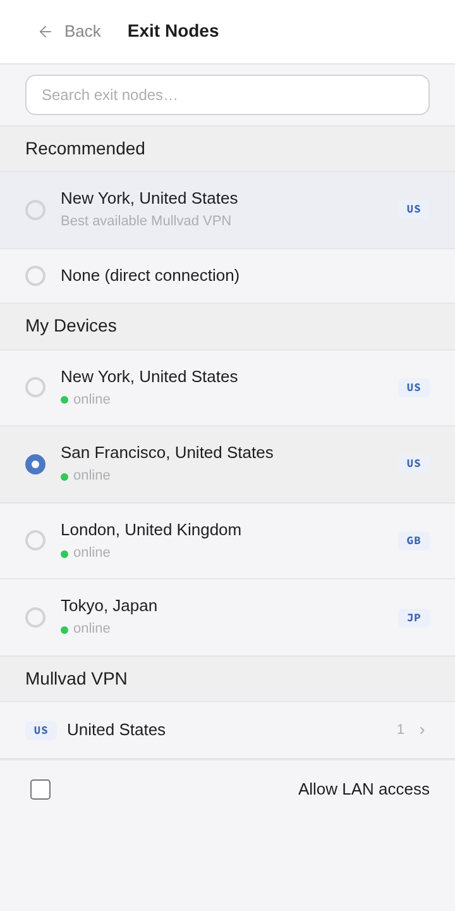

Location is a browser setting now
Exit here.
Not everywhere.
Route this browser through your own devices, or through Mullvad when available.
Route this browser through your own devices, or through Mullvad when available.
